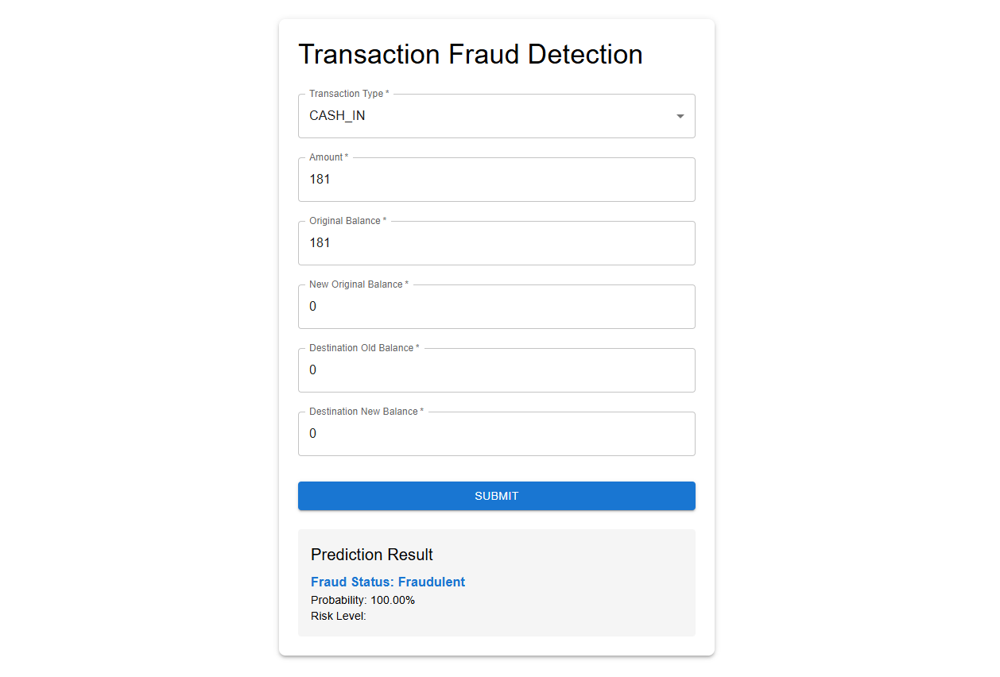

Project
Real-Time Data Transaction Fraudulent Detection System
Designed and implemented a real-time data processing system using Python and Kafka to handle
large streams of financial data, improving data throughput by 40%. This system is crucial for
detecting fraudulent transactions in real time, providing a vital tool for financial security.

- Technologies used: Python, Apache Kafka, Scikit-Learn, Pandas
- Key features: Real-time analysis, Automatic fraud alerts, Scalable data processing
- Outcome: Increased detection of fraudulent transactions by 25%, significantly reducing
potential financial losses.
Identifying Pattern as if it a Person or Company using machine learning
This project focuses on distinguishing between personal and commercial entities from data
entries, utilizing a logistic regression algorithm to categorize data accurately based on
keywords. The goal is to streamline sales processes by categorizing sales as either commercial
or retail.

Project Objective
The objective is to accurately identify customer categories using machine learning to
differentiate between commercial sales and retail sales, thus optimizing the sales strategy.
Methodology
Using logistic algorithms, the system processes names through a trained model to identify
patterns and categorize them effectively. This setup improves data processing efficiency and
accuracy.

Data Visualization
A simple pivot table is created to visualize the categorization process, showing the
distribution between personal and commercial transactions.
Drag and Drop CSV File Uploader
This Python application enhances user interaction by allowing CSV files to be uploaded through a drag-and-drop interface. Users can view the content of these files displayed on a web page immediately after uploading. Future developments will include database integration capabilities.

Project Objective
The main goal is to simplify the process of uploading and displaying CSV file data, with plans to extend this functionality to support direct uploads to databases, enhancing data management workflows.
Features
The application supports drag-and-drop uploading, instant display of CSV content, and ensures file validation to accept only CSV formats. This makes it a versatile tool for data analysis and entry management.